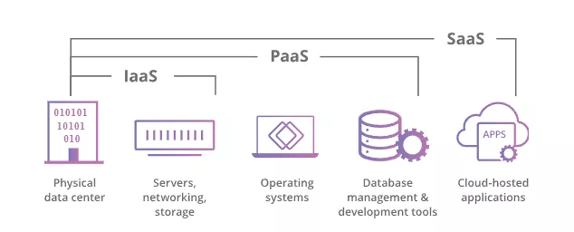
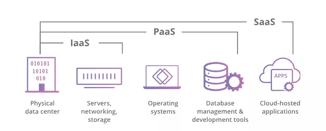
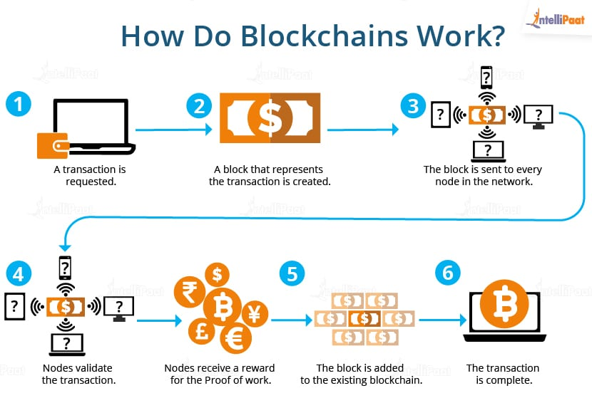
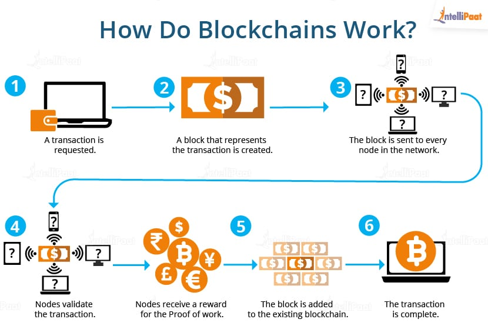
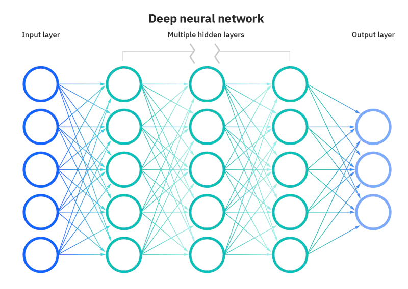
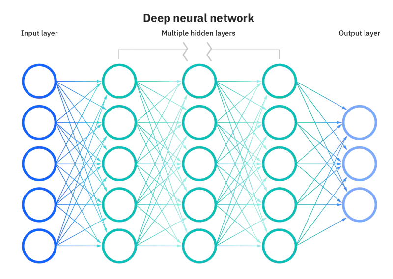

CLOUD
Cloud computing is a universal paradigm for computing
infrastructure and solutions delivered as a service. Cloud
computing eliminates the need to plan, build and maintain
internal infrastructure for businesses because it is
cost-efficient, allowing companies only to pay cloud providers
for services on an as-needed basis. Cloud computing works by
implementing virtualization - allowing just one physical machine
to host many different servers by creating multiple virtual
machines. These servers do not interact, and all files and
applications are not visible or accessible to each other despite
all being on one physical device. By utilising virtual machines,
data centres can use their physical space more efficiently -
allowing one data centre to become many, also reducing
electricity and maintenance costs.
There are three leading service modules for cloud computing which are Infrastructure as a Service (IaaS), Platform as a Service (PaaS), and Software as a Service (SaaS). IaaS is a distribution model where a cloud provider delivers virtualized compute, network, and storage resources to businesses on demand. Companies can scale the resources they pay for on an as-needed basis. The most commonly used examples of this are Amazon Web Services (AWS), Microsoft Azure, and Google Compute Engine (GCE). PaaS is a distribution model where a cloud provider hosts infrastructure like IaaS and includes development tools and database management systems. PaaS allows developers a platform to create without installing additional software or buying expensive hardware. The most commonly used examples of this are Google App Engine (GAE), IBM Cloud, and AWS Elastic Beanstalk.
SaaS, also called cloud-based software, is a distribution model where a cloud provider hosts an application's server, database, and code. Users will access the software upon applying to a subscription model. The most commonly used examples of this are Slack, Dropbox, and Google G Suite. SaaS is today's cutting-edge technology for cloud computing as it is the primary way most people outside of businesses will interact with the cloud. This is due to requiring customers to purchase no hardware or software and not having to maintain any applications. The main difference between SaaS and traditional software is that SaaS isn't selling a product; it's a service that will be continually maintained. Users can access SaaS applications from anywhere and on any device, allowing for greater flexibility in businesses as their employees can operate from outside of the workplace. Employees don't need to install software on each device they access or purchase new licensing. With the increase of SaaS applications rising, this also means that data security and privacy are paramount. There are huge security risks, too, as anyone with the correct credentials can be granted access, thus requiring better identification tools.
There are growing security developments in cloud computing, such as SaaS Security Posture Management (SSPM); SSPM assesses a company's security measures and configurations for its SaaS portfolio. SSPM provides insights, recommendations, and automation tools to help enhance security and decrease risks and vulnerabilities. Another development is Extended Detection and Response (XDR), which provides a more unified security platform to monitor incidents and collect and correlate data. XDR is offered out of the box, meaning businesses do not need to purchase and manage extra tools. XDR will make it possible to detect better and react faster to attacks throughout all layers of an IT environment, from the cloud to an unprotected endpoint. Artificial intelligence will also increase cloud security and efficiency by enabling smoother workflows and the ability to automate and manage processes. An IBM study suggests that 65% of organisations believe AI is essential to their success. (IBM, 2016). Cloud technology soon requires advanced system thinking due to growing program sizes and complexity. Evolution predicts that cloud computing will overtake hardware doing most of the work, eventually leading to data getting analysed by machines without human intervention. 'By 2024, more than 45% of IT spending on system infrastructure, infrastructure software, application software and business process outsourcing will shift from traditional solutions to cloud.' (Gartner, 2019 para. 1).
As cloud computing advances, businesses will likely adopt a multi-cloud/hybrid-cloud approach to improve their security, scalability, flexibility, and reliability by diverting their workload. This approach has some drawbacks, such as increased management complexity, interoperability, latency, and governance and compliance concerns. Multi-cloud is when a business uses two or more public cloud services in a single network. This approach aims to eliminate the reliance on a single cloud provider while allowing for increased disaster avoidance by having data and compute resources available at all times to avoid downtime. Multi-cloud requires employees who have expertise across multiple cloud systems, as they aren't always compatible with each other. Multi-cloud can also be a hybrid cloud, as hybrid cloud typically refers to a business combining an onsite data centre or a private cloud, or both, along with a public cloud. Hybrid cloud is generally used in regulated businesses, such as banks, government, and healthcare since it requires some data stored on-premises. Hybrid cloud offers reduced latency and increased performance due to the typical use of an onsite data centre. It is also easier for businesses to adopt a cloud computing approach by simply adding a public cloud provider alongside their existing infrastructure. Multi-cloud and hybrid cloud are just strategies to improve how businesses use cloud computing. Whichever approach a business decides to take, they're still adopting the future of data storage, security, and privacy by jumping into cloud computing.
The most significant impact of Multi-cloud and hybrid cloud is the increased ability to save money by choosing the lowest services for each provider and not be vendor locked; this allows businesses to focus more capital on innovative areas. Cloud engineers, developers, and architects will also have to become experts in more than just one type of cloud structure, as they aren't all compatible. As more businesses adopt multi and hybrid clouds, they will typically see less downtime, faster innovation, and increased efficiency. While Multi-cloud can make internal infrastructure redundant for businesses, hybrid cloud does not, as they add to what they already own and maintain. Multi and hybrid clouds can potentially impact the jobs of cloud experts who don't adapt to the requirement of knowing multiple types of cloud structures; however, as these strategies are still in their infancy, there is still plenty of time to learn. People learning to become cloud experts are advantaged remarkably now as there are many ways to gain certifications and the skills cloud computing requires. University isn't always the only approach that one can take.
My ideal job is to become a database administrator, so multi-cloud and hybrid cloud strategies will affect me. I will need more certifications and skills than if a business were not to use any cloud computing services. On top of needing SQL certifications, I need platform expertise, such as Oracle, Google, Amazon, and Microsoft. I potentially utilise multi and hybrid cloud with apps such as Dropbox, iCloud, Discord, MS Teams, G Suite, and Steam in my daily life. The most common cloud service that I use is iCloud, as I use this to store all of my University work so I can access it on my Mac and my PC. I also use Steam cloud saves, as it’s unnecessary to store on both my computer and the cloud. I’ve been using Google Docs to collaborate with my group members for our assignments and I’ve really enjoyed the real time, working together aspect. I have friends who work from home using Amazon WorkSpace, so I'm sure that they appreciate their employers being flexible by allowing work from home by utilising cloud computing. Cloud computing is still developing, and its future is bright. With cloud-only PCs, cloud VR/AR headsets, and cloud gaming platforms such as Google Stadia and Amazon Luna, most people will start to utilise cloud computing in their everyday lives. No matter the strategy one of these companies uses, typically, their users will not notice a difference aside from decreased downtimes.

CYBERSECURITY
Cyber security, or electronic information security, is one of the
most important aspects of a business to run smoothly and keep data
safe. Just as people are hired to protect customers at a bar or
even a prime minister at a conference, those who specialise in
cyber security are able to set up defences for mobile phones to
large networks. Before the internet, those who had access to
technological devices only needed to use passwords to protect
themselves. It wasn't until the 70's that a group of
researchers began experimenting with computer programs on a
network called ARPANET, meaning The Advanced Research Projects
Agency Network. They discovered they could move the network and
leave a trail to follow wherever the program went. Bob Thomas was
the head of this task and named the program 'CREEPER',
which left a message circulating that said 'I'M THE
CREEPER: CATCH ME IF YOU CAN.' Not long after this, a man
named Ray Tomlinson, who also invented email, designed a program
that could self-replicate, becoming the first computer worm.
Thankfully he created another program called Reaper that followed
the worm and deleted it. This was the first example of antivirus
software and the beginning of cyber security.
There are three leading service modules for cloud computing which are Infrastructure as a Service (IaaS), Platform as a Service (PaaS), and Software as a Service (SaaS). IaaS is a distribution model where a cloud provider delivers virtualized compute, network, and storage resources to businesses on demand. Companies can scale the resources they pay for on an as-needed basis. The most commonly used examples of this are Amazon Web Services (AWS), Microsoft Azure, and Google Compute Engine (GCE). PaaS is a distribution model where a cloud provider hosts infrastructure like IaaS and includes development tools and database management systems. PaaS allows developers a platform to create without installing additional software or buying expensive hardware. The most commonly used examples of this are Google App Engine (GAE), IBM Cloud, and AWS Elastic Beanstalk.
SaaS, also called cloud-based software, is a distribution model where a cloud provider hosts an application's server, database, and code. Users will access the software upon applying to a subscription model. The most commonly used examples of this are Slack, Dropbox, and Google G Suite. SaaS is today's cutting-edge technology for cloud computing as it is the primary way most people outside of businesses will interact with the cloud. This is due to requiring customers to purchase no hardware or software and not having to maintain any applications. The main difference between SaaS and traditional software is that SaaS isn't selling a product; it's a service that will be continually maintained. Users can access SaaS applications from anywhere and on any device, allowing for greater flexibility in businesses as their employees can operate from outside of the workplace. Employees don't need to install software on each device they access or purchase new licensing. With the increase of SaaS applications rising, this also means that data security and privacy are paramount. There are huge security risks, too, as anyone with the correct credentials can be granted access, thus requiring better identification tools.
There are growing security developments in cloud computing, such as SaaS Security Posture Management (SSPM); SSPM assesses a company's security measures and configurations for its SaaS portfolio. SSPM provides insights, recommendations, and automation tools to help enhance security and decrease risks and vulnerabilities. Another development is Extended Detection and Response (XDR), which provides a more unified security platform to monitor incidents and collect and correlate data. XDR is offered out of the box, meaning businesses do not need to purchase and manage extra tools. XDR will make it possible to detect better and react faster to attacks throughout all layers of an IT environment, from the cloud to an unprotected endpoint. Artificial intelligence will also increase cloud security and efficiency by enabling smoother workflows and the ability to automate and manage processes. An IBM study suggests that 65% of organisations believe AI is essential to their success. (IBM, 2016). Cloud technology soon requires advanced system thinking due to growing program sizes and complexity. Evolution predicts that cloud computing will overtake hardware doing most of the work, eventually leading to data getting analysed by machines without human intervention. 'By 2024, more than 45% of IT spending on system infrastructure, infrastructure software, application software and business process outsourcing will shift from traditional solutions to cloud.' (Gartner, 2019 para. 1).
As cloud computing advances, businesses will likely adopt a multi-cloud/hybrid-cloud approach to improve their security, scalability, flexibility, and reliability by diverting their workload. This approach has some drawbacks, such as increased management complexity, interoperability, latency, and governance and compliance concerns. Multi-cloud is when a business uses two or more public cloud services in a single network. This approach aims to eliminate the reliance on a single cloud provider while allowing for increased disaster avoidance by having data and compute resources available at all times to avoid downtime. Multi-cloud requires employees who have expertise across multiple cloud systems, as they aren't always compatible with each other. Multi-cloud can also be a hybrid cloud, as hybrid cloud typically refers to a business combining an onsite data centre or a private cloud, or both, along with a public cloud. Hybrid cloud is generally used in regulated businesses, such as banks, government, and healthcare since it requires some data stored on-premises. Hybrid cloud offers reduced latency and increased performance due to the typical use of an onsite data centre. It is also easier for businesses to adopt a cloud computing approach by simply adding a public cloud provider alongside their existing infrastructure. Multi-cloud and hybrid cloud are just strategies to improve how businesses use cloud computing. Whichever approach a business decides to take, they're still adopting the future of data storage, security, and privacy by jumping into cloud computing.
The most significant impact of Multi-cloud and hybrid cloud is the increased ability to save money by choosing the lowest services for each provider and not be vendor locked; this allows businesses to focus more capital on innovative areas. Cloud engineers, developers, and architects will also have to become experts in more than just one type of cloud structure, as they aren't all compatible. As more businesses adopt multi and hybrid clouds, they will typically see less downtime, faster innovation, and increased efficiency. While Multi-cloud can make internal infrastructure redundant for businesses, hybrid cloud does not, as they add to what they already own and maintain. Multi and hybrid clouds can potentially impact the jobs of cloud experts who don't adapt to the requirement of knowing multiple types of cloud structures; however, as these strategies are still in their infancy, there is still plenty of time to learn. People learning to become cloud experts are advantaged remarkably now as there are many ways to gain certifications and the skills cloud computing requires. University isn't always the only approach that one can take.
My ideal job is to become a database administrator, so multi-cloud and hybrid cloud strategies will affect me. I will need more certifications and skills than if a business were not to use any cloud computing services. On top of needing SQL certifications, I need platform expertise, such as Oracle, Google, Amazon, and Microsoft. I potentially utilise multi and hybrid cloud with apps such as Dropbox, iCloud, Discord, MS Teams, G Suite, and Steam in my daily life. The most common cloud service that I use is iCloud, as I use this to store all of my University work so I can access it on my Mac and my PC. I also use Steam cloud saves, as it’s unnecessary to store on both my computer and the cloud. I’ve been using Google Docs to collaborate with my group members for our assignments and I’ve really enjoyed the real time, working together aspect. I have friends who work from home using Amazon WorkSpace, so I'm sure that they appreciate their employers being flexible by allowing work from home by utilising cloud computing. Cloud computing is still developing, and its future is bright. With cloud-only PCs, cloud VR/AR headsets, and cloud gaming platforms such as Google Stadia and Amazon Luna, most people will start to utilise cloud computing in their everyday lives. No matter the strategy one of these companies uses, typically, their users will not notice a difference aside from decreased downtimes.

Since then, the risk and amount of 'hackers' online have also grown and become stronger, leading to cyber security doing the same. Instead of only a password to keep your devices and data safe, you now have access to programs that do so much more. In most cases, viruses can't be sent around without being seen until it is too late. As of right now, there are many avenues to achieve a top standard of safety regarding cyber security. Antivirus and firewall programs are some of the most popular options. With antivirus programs scanning your computer for suspicious files and software, then destroying them, implementing a firewall program to work alongside that to monitor traffic between your network and the internet, your data, and personal information will remain safe. Although antivirus software will do most of the work, it's also down to the consumer, as falling for a suspicious email with a link can corrupt the smallest of devices. With the growing range of devices, more and more data is being created, meaning more advancements are needed in cyber security.
Artificial intelligence over the past years has made great strides in how and where it can be used. Cyber security is one of them. For most work areas, especially those that rely on tasks being completed via a technological program or device, AI has been implemented to manage better time spent on tasks and money spent on employees. This will be a great benefit to have within a company, but it also creates another target for hackers. An example of this is Cognitive Security.
Cognitive security refers to the application of AI and Machine learning technologies to create machine learning algorithms that can then detect an upcoming threat before it has done any damage. This AI technology can do many tasks simultaneously, whereas a person doing the same will have to go down many avenues to reach the same result. It will be a huge step forward in the right direction but may also lead to fewer job opportunities in this sector. As we are moving into the age of technology, many companies are now choosing options that involve programs or relevant technology to take the place of human employees. This would be because AI applications are a faster resource and more affordable in the long run. Behavioural analytics is another technology that is helping advance the cyber security sector. Observing a network or system for an increase in data transmission can imply that there may be a security issue. Just as they would analyse behaviours on social media accounts to determine which advertisements are appropriate, they do the same but search for abnormal activity on specific networks. There are also options to have embedded hardware authentication to keep the physical aspects of your computer and its data safe. Instead of just a single password or pin, you now have numerous options to authenticate your belongings.
With these new technological advancements in cyber security, I can see the risk of unseen dangers reducing. Instead of having a professional jump into something to sort through data and the potential threats, having an AI application interact immediately and eradicate the threat will take less time and in turn make the company or user more productive to attend to other tasks. Significant events, such as elections, will soon become more secure than ever. It's well known that hackers wait for the right moment, usually when an event is taking place, to attack and compromise the data used. Instead of having professionals on the clock to assess any abnormalities that may arise, the AI application will detect the very beginning of an issue and stop it before it gets out of hand. Using a feature of this AI application called language processing, the professionals involved will be able to detect where the cyber-attack has originated from. This processing tool will also be able to analyse vulnerabilities within a network or system.
This is suitable for companies, and also, most everyone with a technological device will benefit from these advancements. Cyber security can be acknowledged as the backbone of many people's lives. Without such a thing, I could imagine those who've joined the online world would instead leave it, just like you would if a store didn't have security cameras or people to protect you. A potential downfall could involve those working in this industry being replaced by such programs. These professionals are highly sought after, so moving these AI technologies to work alongside them may only be a transition. Until this technology can work unsupervised, it may be a case of employing someone or a group of people to check over and perform maintenance on the application.
As programs and security options grow faster and more reliable, this will hugely affect my daily life. Having choices in different technologies to protect my separate devices will keep the growing amount of data I create safe. As new products are designed, so are the security avenues. Antivirus software developed in the early 2000s might not have the capabilities needed to protect something bought in 2022, so knowing the advancements being made and set to be made down the track helps ease the stress of potential data breaches. At the moment, I'm pretty pleased with where we are in terms of keeping our data safe. Having AI detect changes in data transmission before it's happened and if data has been compromised will, in turn, leave less work for myself and others to do as well as the program to identify and delete any threat. In terms of the effect on businesses, having the option to do tasks concurrently via an online cloud, the safety measures are only being altered in their favour. Like medication to cure an illness, cyber security is upping the ante by moving with new threats. As Cognitive security is in its infancy, I can only imagine how the future will look for Cyber security. It's taken approximately 50 years since the creation of antivirus software, and it seems we are only getting started.

BLOCKCHAIN AND
CRYPTOCURRENCIES Blockchain is a technology that has recently taken the world by
storm. It can be described as a decentralised digital ledger that
is immutable and is maintained using a global peer-to-peer
network. In 1991, blockchain was developed by a group of
researchers to timestamp digital documents which would prevent
them from being backdated or tampered with. From 2009 onward, this
tool was adopted and improved by Satoshi Nakamoto to host the
world’s first-ever cryptocurrency, Bitcoin.
Blockchain is a technology that has recently taken the world by
storm. It can be described as a decentralised digital ledger that
is immutable and is maintained using a global peer-to-peer
network. In 1991, blockchain was developed by a group of
researchers to timestamp digital documents which would prevent
them from being backdated or tampered with. From 2009 onward, this
tool was adopted and improved by Satoshi Nakamoto to host the
world’s first-ever cryptocurrency, Bitcoin.
Like how much of our technology has been built to date to adapt to a need, the blockchain has continuously been adapted and built upon to extinguish the need for the financial services offered by centralised systems such as governments or banks. Some of the reasons for this are the fact that these centralised systems are prone to security breaches, tampering and control. One of the main reasons for the development of blockchains and cryptocurrencies, however, is to replace conventional currency.
“The core problem with fiat is all the trust that is required to make it work. The central bank must be trusted not to debase the currency, but the history of fiat currencies is full of breaches of that trust. Banks must be trusted to hold our money and transfer it electronically, but they lend it out in waves of credit bubbles with barely a fraction in reserve. We have to trust them with our privacy, trust them not to let identity thieves drain our accounts.” (Satoshi Nakamoto, 2009, para. 2 )
An example of a flaw in centralisation is that once upon a time, encryption for users’ personal information did not exist. For years, people relied on password protection to secure their data and trusting that a system administrator would keep their information hidden and safe. This person had the opportunity to override user privacy and potentially leak, or unwittingly allow bad actors to gain access to this information. This is the same issue we have with centralised systems in control of our funds.
A quick and easy-to-understand analogy for blockchain is like a Google Doc being used for a university assignment. For multiple people to work on the document - rather than transferring it back and forth or everyone having their own copy of the document – it is distributed, which allows everyone to have access simultaneously, and every modification is recorded in real-time making edits fully transparent. Before the document is submitted, a majority of the group agrees that their submission is adequate and then proceeds to upload it. (Builtin.com, n.d.)
Blockchain is composed of three leading technologies in itself: Cryptographic keys, a peer-to-peer network and a means of computing. (Simplilearn, 2022) For a user to make a transaction on the blockchain, each party will hold public and private keys that control the asset they own. Public keys are also known as “addresses.” These are a mix of numbers and letters which must be shared to receive assets. A private key represents the final control and ownership of a wallet. This private key also acts as a signature or a pin on your bank card – however, if lost, cannot be retrieved.
Proceeding, a request is made by a user by signing with their set of private keys to broadcast a transaction across the network which is then placed into a pool containing hundreds, if not thousands of other transactions. From here, the transactions are verified by validators or miners who use computing power to race and solve complex math problems to receive a reward in cryptocurrency for being the one to successfully “mine” the block (crack the code and add their block to the chain). Just in the way that we would mine for gold.  Once the block is added to the chain, a piece of the code (known as a hash – like a barcode or signature) from the previous block is also embedded. The benefit of this is to make the blockchain practically unhackable. If someone were able to hack a block, the hash on the new block would not match the previous, thus everything from there on would not be valid. Another major security feature of the blockchain is that 51% of all devices on the network must agree that the block was solved correctly. Although the blockchain was originally developed to manage digital
currencies such as Bitcoin and is the most known use case, it has
also become widely used for an abundance of applications in
different industries. Some of these include supply chain
management, cyber security, healthcare, governments, and other
financial sectors like banking and Defi (decentralised finance.)
(P. Baker, 2021). The biggest commonality across all of these
industries is the fact that they need a secure and immutable means
of accessing and storing information.
Although the blockchain was originally developed to manage digital
currencies such as Bitcoin and is the most known use case, it has
also become widely used for an abundance of applications in
different industries. Some of these include supply chain
management, cyber security, healthcare, governments, and other
financial sectors like banking and Defi (decentralised finance.)
(P. Baker, 2021). The biggest commonality across all of these
industries is the fact that they need a secure and immutable means
of accessing and storing information.
NFTs (non-fungible tokens) are a massive growing aspect of the blockchain, and I believe they have the biggest growth potential for real-world use cases. Unlike traditional cryptocurrencies, which can be traded or exchanged at equivalency, NFTs are assets on a blockchain with unique identification codes and metadata that distinguish them from each other. Being unique and non-fungible, these make the perfect tool for both consumer and commercial applications. Currently, in these early days, NFTs are a majority of digital artwork, collectibles, avatars, and in-game items.
‘As NFTs can have only one owner at a time, this gives the owner exclusive rights, and the use of blockchain technology makes it simple to verify ownership and transfer the tokens between owners. The creator can also store specific information in an NFT’s metadata. For instance, artists can sign their artwork by including their signature in the file.’ (R. Conti, 2022)
I can see NFTs having much greater utility in the near future. One simplistic yet super-hyped approach to an NFT concept comes from the well-known collection Bored Ape Yacht Club (BAYC). BAYC is a collection of 10000 unique NFTs (BAYC, n.d.) that serve as a badge or ticket to enter an exclusive social club that hosts events both digitally and all over the globe, also providing holders exclusive access to. This approach of having a “ticket” could impact our daily lives behind the scenes, such as having blockchain verifiable concert tickets, plane tickets, awards, digital identities, government IDs, digital driving licenses and so much more. I believe using NFTs and blockchain will mostly go unseen by the everyday person; however, this will be the backbone of how we live day-to-day in an ever-growing digital world.
To date, NFTs, in the sense of collectibles, have been a big part of my financial well-being. Buying and selling these has greatly increased my portfolio. As more utility is added to these pieces of technology, the world around us will adapt. We already do not have to carry around wallets as there are practically built into our devices. The New South Wales government have already implemented digital drivers’ licenses that are underpinned by blockchain technology (J.Hendry, 2018). The impact blockchain has had on our world already has been massive and will further continue to grow.
CRYPTOCURRENCIES
Blockchain is a technology that has recently taken the world by
storm. It can be described as a decentralised digital ledger that
is immutable and is maintained using a global peer-to-peer
network. In 1991, blockchain was developed by a group of
researchers to timestamp digital documents which would prevent
them from being backdated or tampered with. From 2009 onward, this
tool was adopted and improved by Satoshi Nakamoto to host the
world’s first-ever cryptocurrency, Bitcoin.
Like how much of our technology has been built to date to adapt to a need, the blockchain has continuously been adapted and built upon to extinguish the need for the financial services offered by centralised systems such as governments or banks. Some of the reasons for this are the fact that these centralised systems are prone to security breaches, tampering and control. One of the main reasons for the development of blockchains and cryptocurrencies, however, is to replace conventional currency.
“The core problem with fiat is all the trust that is required to make it work. The central bank must be trusted not to debase the currency, but the history of fiat currencies is full of breaches of that trust. Banks must be trusted to hold our money and transfer it electronically, but they lend it out in waves of credit bubbles with barely a fraction in reserve. We have to trust them with our privacy, trust them not to let identity thieves drain our accounts.” (Satoshi Nakamoto, 2009, para. 2 )
An example of a flaw in centralisation is that once upon a time, encryption for users’ personal information did not exist. For years, people relied on password protection to secure their data and trusting that a system administrator would keep their information hidden and safe. This person had the opportunity to override user privacy and potentially leak, or unwittingly allow bad actors to gain access to this information. This is the same issue we have with centralised systems in control of our funds.
A quick and easy-to-understand analogy for blockchain is like a Google Doc being used for a university assignment. For multiple people to work on the document - rather than transferring it back and forth or everyone having their own copy of the document – it is distributed, which allows everyone to have access simultaneously, and every modification is recorded in real-time making edits fully transparent. Before the document is submitted, a majority of the group agrees that their submission is adequate and then proceeds to upload it. (Builtin.com, n.d.)
Blockchain is composed of three leading technologies in itself: Cryptographic keys, a peer-to-peer network and a means of computing. (Simplilearn, 2022) For a user to make a transaction on the blockchain, each party will hold public and private keys that control the asset they own. Public keys are also known as “addresses.” These are a mix of numbers and letters which must be shared to receive assets. A private key represents the final control and ownership of a wallet. This private key also acts as a signature or a pin on your bank card – however, if lost, cannot be retrieved.
Proceeding, a request is made by a user by signing with their set of private keys to broadcast a transaction across the network which is then placed into a pool containing hundreds, if not thousands of other transactions. From here, the transactions are verified by validators or miners who use computing power to race and solve complex math problems to receive a reward in cryptocurrency for being the one to successfully “mine” the block (crack the code and add their block to the chain). Just in the way that we would mine for gold.  Once the block is added to the chain, a piece of the code (known as a hash – like a barcode or signature) from the previous block is also embedded. The benefit of this is to make the blockchain practically unhackable. If someone were able to hack a block, the hash on the new block would not match the previous, thus everything from there on would not be valid. Another major security feature of the blockchain is that 51% of all devices on the network must agree that the block was solved correctly.
Although the blockchain was originally developed to manage digital
currencies such as Bitcoin and is the most known use case, it has
also become widely used for an abundance of applications in
different industries. Some of these include supply chain
management, cyber security, healthcare, governments, and other
financial sectors like banking and Defi (decentralised finance.)
(P. Baker, 2021). The biggest commonality across all of these
industries is the fact that they need a secure and immutable means
of accessing and storing information.
NFTs (non-fungible tokens) are a massive growing aspect of the blockchain, and I believe they have the biggest growth potential for real-world use cases. Unlike traditional cryptocurrencies, which can be traded or exchanged at equivalency, NFTs are assets on a blockchain with unique identification codes and metadata that distinguish them from each other. Being unique and non-fungible, these make the perfect tool for both consumer and commercial applications. Currently, in these early days, NFTs are a majority of digital artwork, collectibles, avatars, and in-game items.
‘As NFTs can have only one owner at a time, this gives the owner exclusive rights, and the use of blockchain technology makes it simple to verify ownership and transfer the tokens between owners. The creator can also store specific information in an NFT’s metadata. For instance, artists can sign their artwork by including their signature in the file.’ (R. Conti, 2022)
I can see NFTs having much greater utility in the near future. One simplistic yet super-hyped approach to an NFT concept comes from the well-known collection Bored Ape Yacht Club (BAYC). BAYC is a collection of 10000 unique NFTs (BAYC, n.d.) that serve as a badge or ticket to enter an exclusive social club that hosts events both digitally and all over the globe, also providing holders exclusive access to. This approach of having a “ticket” could impact our daily lives behind the scenes, such as having blockchain verifiable concert tickets, plane tickets, awards, digital identities, government IDs, digital driving licenses and so much more. I believe using NFTs and blockchain will mostly go unseen by the everyday person; however, this will be the backbone of how we live day-to-day in an ever-growing digital world.
To date, NFTs, in the sense of collectibles, have been a big part of my financial well-being. Buying and selling these has greatly increased my portfolio. As more utility is added to these pieces of technology, the world around us will adapt. We already do not have to carry around wallets as there are practically built into our devices. The New South Wales government have already implemented digital drivers’ licenses that are underpinned by blockchain technology (J.Hendry, 2018). The impact blockchain has had on our world already has been massive and will further continue to grow.
MACHINE LEARNING
Machine learning is a form of data and algorithmic iteration
used to create patterns by imitating learning techniques.
Machine learning is a branch of artificial intelligence as it
simulates human intelligence in the way that repetitive process
leads to mimicking human decision-making. It ties in with the
field of data science due to the demand for efficient studies of
big data, which can be achieved with the use of machine
learning. Visualising machine learning is said to look like
layers or a neural network, just like within the brain of a
living being (see Figure 3). The result of machine learning is
applying the data that has been learned from repetition to make
informed decisions.
The key factors in distinguishing machine learning from other branches of artificial intelligence are the repetition of tasks to simulate human trial and error, also known as rote learning. Differences in trials are encountered and stored for future analysis by the program. These variations in results contribute toward the program being able to effectively make decisions based on expected outcomes.
There are many approaches to machine learning, such as supervised learning, reinforcement learning, dimensionality reduction, and deep learning. Deep learning is quickly becoming the dominant approach in machine learning studies. Although its deeply layered artificial neural network requires continual and vast repetition to analyse data in logical pathways, it creates a system beyond that of traditional learning subtypes.
Machine learning is applicable in many fields of research and innovation. Notable areas are fraud detection, dynamic pricing tactics, market research and customer segmentation, chatbots, and support services. One of the largest and key everyday uses is within virtual personal assistants, such as the artificial intelligence shipped as a core feature in all capable smartphones. Machine learning is also becoming more applicable within feature-rich video games where artificial intelligence must make decisions based on user inputs rather than developers writing out hundreds of potential scenarios.
The current state-of-the-art technology in machine learning fields is focused on creating AI to perform tasks so that humans don't have to, and to a degree of accuracy beyond humans. Today's cutting-edge technology is the use of machine learning to develop intelligence for self-driving cars. Once thought of as a possibility far into the future, the most prevalent example of this technology today is Tesla's Autopilot technology. This technology makes use of neural networks to analyse raw images and sensor data from around the vehicle to make appropriate decisions on steering and acceleration. Complex algorithms and deep learning combine to ‘output 1000 predictions every timestep,’ and Tesla's Autopilot ‘neural networks involve 48 networks that take 70,000 GPU hours to learn’ (Tesla Motors, 2022, para. 5). This automobile automation comes with the given problematic scenarios of the absence of human morality within AI. For example, when presented with the dilemma of the car hitting a pedestrian or swerving with a chance to hit a group of pedestrians, how does a self-driving car make that decision? This is one of the many situations that machine learning is hopefully able to solve when it comes to even more significant technological advances in the future.
A recent worldwide benefit from machine learning has been its use in predicting the spread and evolution of the Covid-19 SARS virus. Supervised learning has been used to analyse virus data to monitor and estimate potential mutations in the virus, as well as community infection patterns.
A future advancement in machine learning is heading in the direction of humanoid robots to perform tasks that are dangerous or repetitive. This then paves the way further into the future for self-aware robots, as machine learning, theoretically with enough power and a vast amount of neural networks, could effectively create a brain that can think for itself, just as humans do.
Recent technological advancements helping humanoid robots edge closer to the present are not so huge. We are bound by the limitations of how fast technology can be upgraded. For example, CPU and GPU processing power is getting better every year; however, the rate of progress that is being made by companies such as Intel and AMD is slowing down. The advancement of this technology is, at its core, limited by how small transistors can be made to allow chips to run cooler and more efficiently. Machine learning and neural networks take colossal advantage of CPU and GPU technology to reduce process time, therefore making faster progress. When a program takes “over a month to deploy” (thenewsstack.com, 2019, para. 1), any decrease in time can be hugely advantageous, as to a large company, every day has the potential to gain/lose funds.
AI and self-driving cars/humanoid robots that will come hand in hand will undoubtedly have an impact on the world. Once these technologies are widely accessible to the majority of people, some more complex daily tasks, whether in homes or the workplace, will not require a human to perform. Examples are the step up to 100% complete self-driving cars, factory automation, and household chore robots such as cleaning. People who will benefit the most from AI assistance are those who struggle to complete tasks themselves, such as the elderly and disabled. Taking away the responsibility for carers and the action from the users allows for more time to relax/rest.
AI in the future will replace dangerous and undesirable jobs due to the nature of robots not requiring the same level of supervision and safety as humans. Obviously, having jobs become redundant is undesirable, however, new opportunities will become available. Manufacturing of the robots and cars themselves will likely be automated also, but there is always a need for operators to supervise and manage these facilities. Great minds are required for advancement in the technologies that support these ideas, such as the creation and upkeep of the neural networks that make up the basis of AI.
Overall the impact of these advancements is positive and beneficial to the world, paving the way to a vast technological future.
Personally, I will benefit from AI as a broad subject as it continues to evolve over the next few years. I am currently able to take advantage of a minor version of "self-driving cars" and the AI that is utilised in them, as one of my cars is equipped with a self-parking mode. With the press of a button and hands off the steering wheel, the data is collected by many sensors around the car, and it judges turning angle and distance for when to move forward and back. The technology that also goes into the motorbikes that I ride has made enormous progress in the last five years, with ABS, DTC, and electronic suspension control assisting me to ride my best.
As they get older, my grandparents and parents will release some control of driving and definitely take advantage of any automated process that will allow them to make the most of the increasing age.
Quality of life only has positive outcomes with the advancement of AI, as is its purpose. The most extensive improvements to be made in the area of AI are regarding the efficiency behind the coding of AI, as well as the algorithms and types of learning used for each project. Machine learning is the core technology in the future of AI and is a hugely in-depth field of computing with so much complicated information to learn.

The key factors in distinguishing machine learning from other branches of artificial intelligence are the repetition of tasks to simulate human trial and error, also known as rote learning. Differences in trials are encountered and stored for future analysis by the program. These variations in results contribute toward the program being able to effectively make decisions based on expected outcomes.
There are many approaches to machine learning, such as supervised learning, reinforcement learning, dimensionality reduction, and deep learning. Deep learning is quickly becoming the dominant approach in machine learning studies. Although its deeply layered artificial neural network requires continual and vast repetition to analyse data in logical pathways, it creates a system beyond that of traditional learning subtypes.
Machine learning is applicable in many fields of research and innovation. Notable areas are fraud detection, dynamic pricing tactics, market research and customer segmentation, chatbots, and support services. One of the largest and key everyday uses is within virtual personal assistants, such as the artificial intelligence shipped as a core feature in all capable smartphones. Machine learning is also becoming more applicable within feature-rich video games where artificial intelligence must make decisions based on user inputs rather than developers writing out hundreds of potential scenarios.
The current state-of-the-art technology in machine learning fields is focused on creating AI to perform tasks so that humans don't have to, and to a degree of accuracy beyond humans. Today's cutting-edge technology is the use of machine learning to develop intelligence for self-driving cars. Once thought of as a possibility far into the future, the most prevalent example of this technology today is Tesla's Autopilot technology. This technology makes use of neural networks to analyse raw images and sensor data from around the vehicle to make appropriate decisions on steering and acceleration. Complex algorithms and deep learning combine to ‘output 1000 predictions every timestep,’ and Tesla's Autopilot ‘neural networks involve 48 networks that take 70,000 GPU hours to learn’ (Tesla Motors, 2022, para. 5). This automobile automation comes with the given problematic scenarios of the absence of human morality within AI. For example, when presented with the dilemma of the car hitting a pedestrian or swerving with a chance to hit a group of pedestrians, how does a self-driving car make that decision? This is one of the many situations that machine learning is hopefully able to solve when it comes to even more significant technological advances in the future.
A recent worldwide benefit from machine learning has been its use in predicting the spread and evolution of the Covid-19 SARS virus. Supervised learning has been used to analyse virus data to monitor and estimate potential mutations in the virus, as well as community infection patterns.
A future advancement in machine learning is heading in the direction of humanoid robots to perform tasks that are dangerous or repetitive. This then paves the way further into the future for self-aware robots, as machine learning, theoretically with enough power and a vast amount of neural networks, could effectively create a brain that can think for itself, just as humans do.
Recent technological advancements helping humanoid robots edge closer to the present are not so huge. We are bound by the limitations of how fast technology can be upgraded. For example, CPU and GPU processing power is getting better every year; however, the rate of progress that is being made by companies such as Intel and AMD is slowing down. The advancement of this technology is, at its core, limited by how small transistors can be made to allow chips to run cooler and more efficiently. Machine learning and neural networks take colossal advantage of CPU and GPU technology to reduce process time, therefore making faster progress. When a program takes “over a month to deploy” (thenewsstack.com, 2019, para. 1), any decrease in time can be hugely advantageous, as to a large company, every day has the potential to gain/lose funds.
AI and self-driving cars/humanoid robots that will come hand in hand will undoubtedly have an impact on the world. Once these technologies are widely accessible to the majority of people, some more complex daily tasks, whether in homes or the workplace, will not require a human to perform. Examples are the step up to 100% complete self-driving cars, factory automation, and household chore robots such as cleaning. People who will benefit the most from AI assistance are those who struggle to complete tasks themselves, such as the elderly and disabled. Taking away the responsibility for carers and the action from the users allows for more time to relax/rest.
AI in the future will replace dangerous and undesirable jobs due to the nature of robots not requiring the same level of supervision and safety as humans. Obviously, having jobs become redundant is undesirable, however, new opportunities will become available. Manufacturing of the robots and cars themselves will likely be automated also, but there is always a need for operators to supervise and manage these facilities. Great minds are required for advancement in the technologies that support these ideas, such as the creation and upkeep of the neural networks that make up the basis of AI.
Overall the impact of these advancements is positive and beneficial to the world, paving the way to a vast technological future.
Personally, I will benefit from AI as a broad subject as it continues to evolve over the next few years. I am currently able to take advantage of a minor version of "self-driving cars" and the AI that is utilised in them, as one of my cars is equipped with a self-parking mode. With the press of a button and hands off the steering wheel, the data is collected by many sensors around the car, and it judges turning angle and distance for when to move forward and back. The technology that also goes into the motorbikes that I ride has made enormous progress in the last five years, with ABS, DTC, and electronic suspension control assisting me to ride my best.
As they get older, my grandparents and parents will release some control of driving and definitely take advantage of any automated process that will allow them to make the most of the increasing age.
Quality of life only has positive outcomes with the advancement of AI, as is its purpose. The most extensive improvements to be made in the area of AI are regarding the efficiency behind the coding of AI, as well as the algorithms and types of learning used for each project. Machine learning is the core technology in the future of AI and is a hugely in-depth field of computing with so much complicated information to learn.
